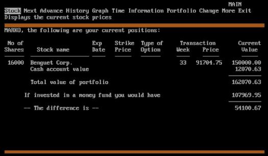
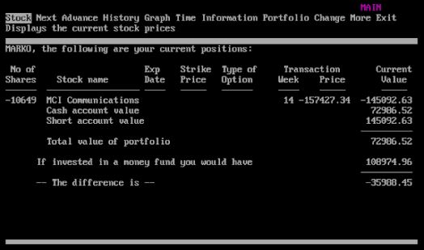

Допълнителни видео инструкции за PRM2
Ако играете играта самостоятелно за наваксване на пропуснати точки от клас:
1) Запознайте се с ръководството тук...
2) Стартирате играта за съответното ниво и се регистрирате с име на играч - вашия факултетен номер.
3) Изигравате играта и сваляте скрийншот, от който да се вижда името на играча (т.е. вашия факултетен номер) и резултатът ви към края на играта. Записвате файла със скрийншота във вид на изображение (jpg, gif, bmp, пр.) и наименовате файла във вид факултетен_номер_име_фамилия_игра_ниво на латиница. (Например: 15164032_ivan_ivanov_prm_nivo-2.jpg). Изигравате ниво 1 и ниво 2.
| Екран от PRM 1 | Екран от PRM 2 |
|---|---|
|  |  |
4) Изпратете скрийншота, като попълните формуляра на следния линк: https://forms.gle/63zsHvia7sQBJGRP9 (ако пратите по някакъв друг начин, НЯМА ДА ВИ БЪДЕ ОТЧЕТЕН РЕЗУЛТАТ).
Класация за ниво 1
Класация за ниво 2